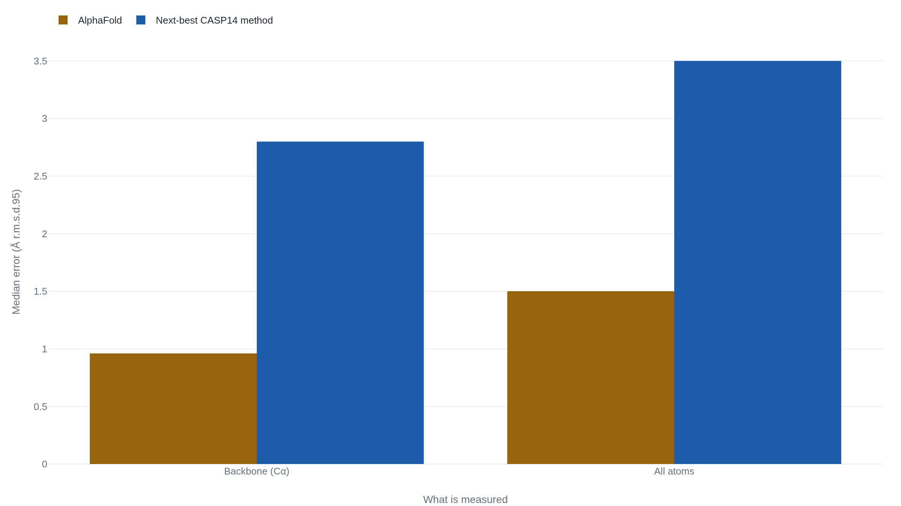

AlphaFold predicts a protein's shape, not what it does
DeepMind's 2021 paper measured how closely predicted protein shapes match the ones labs solve, and beat every rival on a blind test by a margin worth understanding before the Nobel-season shorthand runs past it.
Why this matters
A protein is a molecular tool, and what a tool does depends on its shape. For fifty years, biologists could read a protein's underlying sequence in hours but had almost no way to see the shape it folds into without months of laboratory work. AlphaFold, the program that won its makers a share of the 2024 Nobel Prize in Chemistry, changed that: it predicts the folded shape from the sequence, and DeepMind has now published predicted shapes for more than 200 million proteins. It is the single most-cited proof that artificial intelligence transforms science, and the claim arrives faster than anyone can check it. By the end of this lesson you will be able to read AlphaFold's own numbers, tell exactly what its famous result measured, and see where the "AI solved biology" shorthand reaches past the test it is standing on.
- 01
- Quanta Magazine: how AI reshaped protein science without ending it: a plain-language history of the field AlphaFold entered.
- 02
- The CASP Prediction Center: the blind assessment that produced AlphaFold's headline score.
What the prize citation actually says
In 2024 the Royal Swedish Academy of Sciences awarded half of the Nobel Prize in Chemistry to Demis Hassabis and John Jumper of Google DeepMind. The citation is five words long: "for protein structure prediction."1 The same announcement, explaining the award in plainer terms, says the two built "an AI model to solve a 50-year-old problem."1 DeepMind's own release four years earlier had gone further, under the title "a solution to a 50-year-old grand challenge in biology."2
When the result first appeared, Nature's news desk ran the line "It will change everything."3 That is the shorthand a reader keeps meeting: AI solved biology, or solved protein folding, or made the wet lab optional. The formal citation is narrower on purpose. AlphaFold measured one thing on a blind test, precisely and by a wide margin, and that one thing is smaller than the shorthand built on top of it.
A sequence in, a shape out
A protein is a chain. The cell builds it from a fixed alphabet of twenty small molecules called amino acids, reading a gene and adding one amino acid at a time in a set order. That order is the protein's sequence, and it can be written out as a string of twenty letters.4 The chain does not stay a string. It folds, in water, into one particular three-dimensional shape, and that shape is what lets the protein do its work: a differently folded chain is a different tool. Reading the sequence is easy and cheap. Seeing the folded shape is neither, and for most proteins it had never been done.
Predicting the folded shape from the sequence alone is the "protein folding problem," and it had stood open for more than fifty years.4 The Jumper paper is careful about which part of that problem it takes on: the structure-prediction component, the final folded coordinates, not the process by which a chain finds them.4 AlphaFold reads a sequence together with a multiple sequence alignment, the same protein stacked up across many species so the model can see which positions in the chain tend to vary together, and it returns the atom coordinates of the folded shape.4 It was trained on the roughly 100,000 experimentally solved protein structures known at the time, plus a further set of about 350,000 sequences that the model labeled for itself and then learned from again.4
The jump CASP measured
The number that matters came from a test AlphaFold could not study for. A community experiment called CASP, the Critical Assessment of Structure Prediction, runs a recurring blind trial. Its organizers take proteins whose shapes have just been solved in the lab but not yet published, hand out only the sequences, and collect predictions before the real structures are released. Because the answer is withheld, no team can memorize it, so the score measures prediction and not recall. In the 2020 round, CASP14, DeepMind entered as group 427.5
CASP scores a prediction with GDT, the Global Distance Test, on a scale from 0 to 100. Read it as the share of the protein's positions that land close to where the real structure puts them. The scale is calibrated by what a score lets a biologist conclude: CASP's chair, John Moult, treats a result around 90 as the point where a prediction sits about as close to the experimental structure as two separate experiments on the same protein sit to each other.2 AlphaFold's median across all CASP14 targets was 92.4.2 Past that line, the leftover disagreement is about the size of experimental error itself.
The paper's own hardest number is finer. Measured on the backbone of the chain, AlphaFold's predictions missed the true positions by a median of 0.96 ångströms; the next-best method in CASP14 missed by 2.8.4 An ångström is a ten-billionth of a metre, about the width of a single atom, so the median error was under one atom's width against nearly three for the runner-up. Counting every atom rather than the backbone alone, the figures were 1.5 ångströms against 3.5.4 CASP's own tally, summed across the assessed targets, put DeepMind's group at 244.02 and the next group at 90.82.5

Where the shorthand overshoots the test
Everything above is one measurement: how close a predicted static shape is to the solved one, for a single protein chain, on a blind test. Three of the claims AlphaFold is now cited for reach past that measurement.
| The popular claim | What the record shows |
|---|---|
| AlphaFold predicts what a protein does. | It predicts the folded shape only; the companion paper offers its shapes as inputs to "generate biological hypotheses," a start for experiments rather than an answer.6 |
| AlphaFold solved protein folding. | It predicts the shape a chain settles into, not the folding process or the way the folded protein moves.4 |
| AlphaFold replaces solving structures in the lab. | Even its top-confidence atoms miss the experiment by about twice the gap between two experiments; the authors call the predictions hypotheses.7 |
The third claim is the one an outside group has measured directly. Comparing AlphaFold predictions against experimental crystal structures, Terwilliger and colleagues measured the gap that remains. Even in the model's highest-confidence regions, the predicted atom positions differed from the experimental ones by a median of 0.6 ångströms. About one in ten differed by more than 2 ångströms, roughly twice the gap between two experiments on the same protein.7 Their verdict is a promotion, not a retirement, of experimental biology: AlphaFold predictions are "exceptionally useful hypotheses."7
The model also reports its own uncertainty, and reading it is part of reading AlphaFold. Alongside each predicted shape it gives a per-position confidence score called pLDDT, again on a 0-to-100 scale; a low pLDDT marks a position the model is unsure of, often a floppy region with no fixed shape to predict. The honest ceiling shows up at scale. When DeepMind ran the model across 98.5% of human proteins, 58% of positions came back with a confident prediction and 36% at very high confidence, up from the 17% of positions that had an experimental structure before.6 That still leaves roughly 42% of the human proteome without a confident prediction. The paper names its weak case as well: where the sequence alignment is shallow, fewer than about thirty related sequences, accuracy falls off.4 By 2022 DeepMind and its partners had released predicted structures for over 200 million proteins, a database roughly the size of the known protein world, and every entry carries the same confidence coloring that tells a user which parts to trust.8
On CASP14, AlphaFold matched the accuracy of a laboratory at finding a single chain's folded shape, and what that protein does, how it moves, and whether it can replace an experiment are three separate questions the test never scored.
The takeaway
AlphaFold did one thing and did it superbly. On a blind test it predicted the folded shape of a single protein chain about as accurately as a laboratory measures it: 92.4 out of 100, where 90 already counts as experiment-grade, and a median error smaller than the width of one atom. That result is real, and it is narrow. Predicting a protein's shape is not the same as knowing what the protein does, watching it fold, or retiring the experiments that still catch what the model gets wrong. The next time you meet "AI solved biology," ask the question CASP asked: solved which number, on which test? AlphaFold has a precise answer, and it is worth more than the shorthand.
- 01
- The AlphaFold Protein Structure Database: open a predicted structure and see the pLDDT confidence coloring for yourself.
- 02
- MIT Technology Review: DeepMind's protein-folding AI has solved a 50-year-old grand challenge of biology: a readable account of the CASP14 moment, framing and all.
Sources
- The Nobel Prize · The Nobel Prize in Chemistry 2024 (press release)
- DeepMind · AlphaFold: a solution to a 50-year-old grand challenge in biology
- Nature News (Ewen Callaway) · 'It will change everything': DeepMind's AI makes gigantic leap in solving protein structures
- Jumper et al., Nature 2021 · Highly accurate protein structure prediction with AlphaFold
- CASP14 Prediction Center · Final assessment Z-scores
- Tunyasuvunakool et al., Nature 2021 · Highly accurate protein structure prediction for the human proteome
- Terwilliger et al., Nature Methods 2024 · AlphaFold predictions are valuable hypotheses and accelerate but do not replace experimental structure determination
- DeepMind · AlphaFold reveals the structure of the protein universe